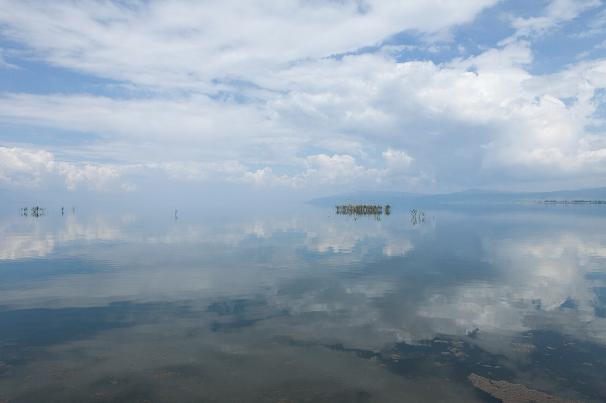
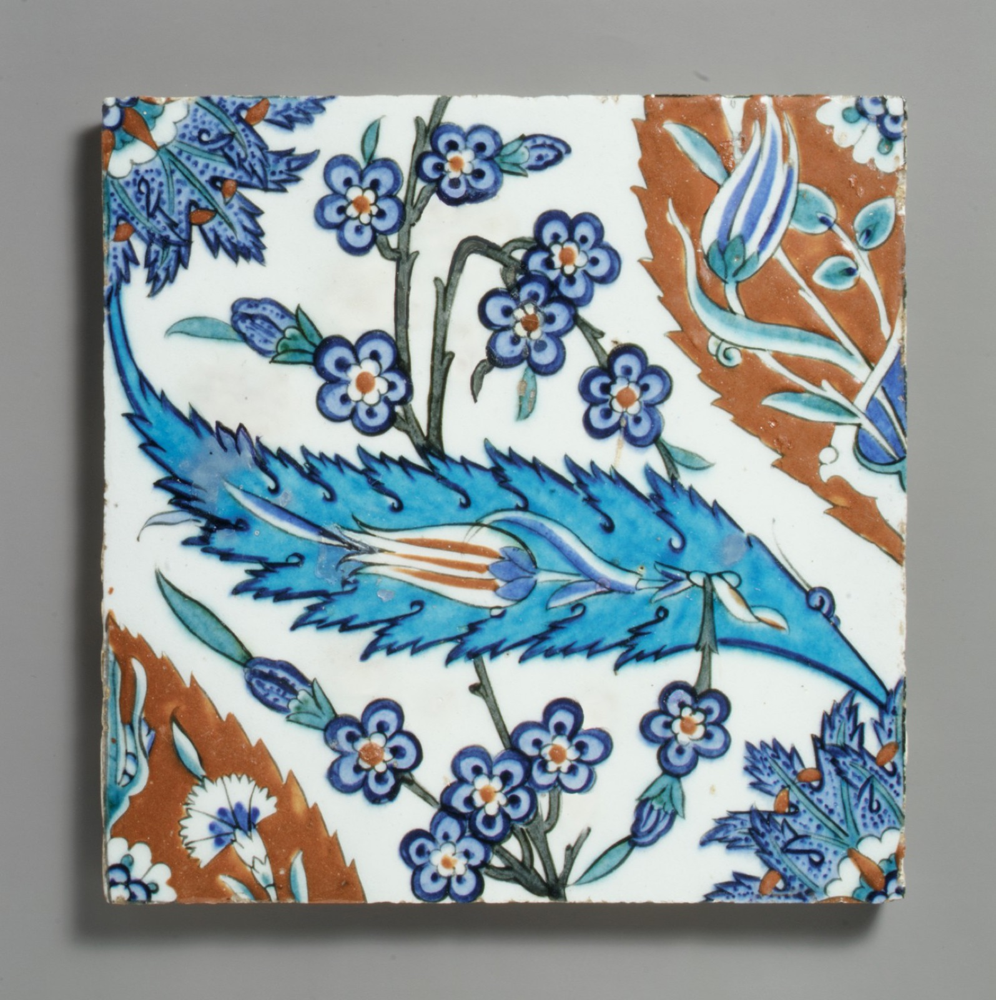
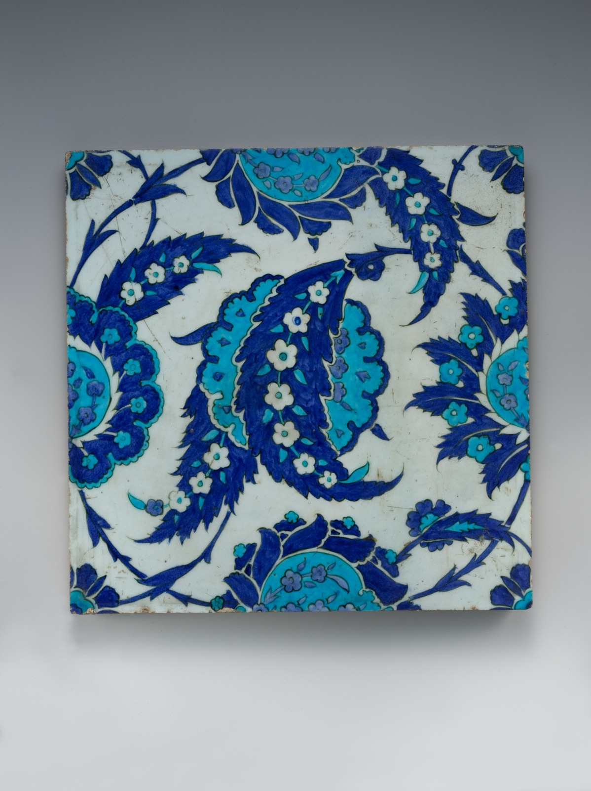
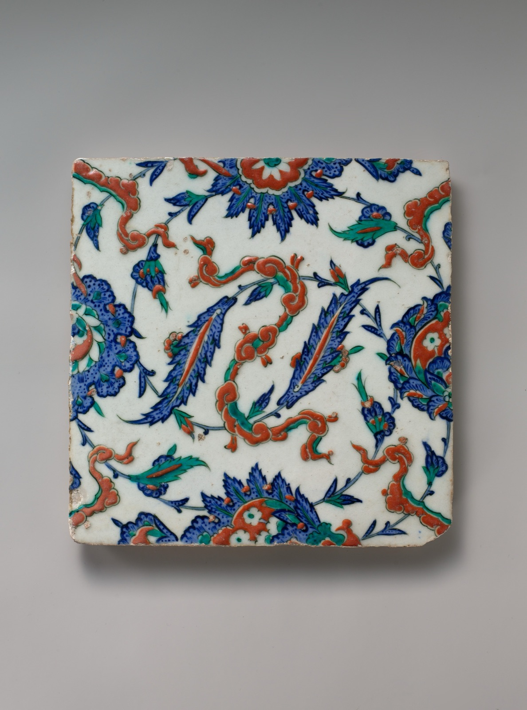
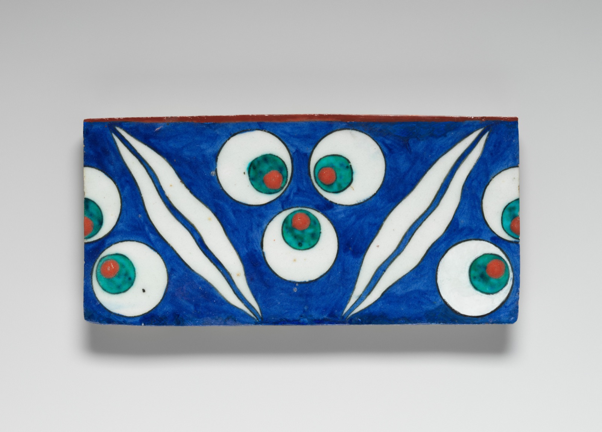
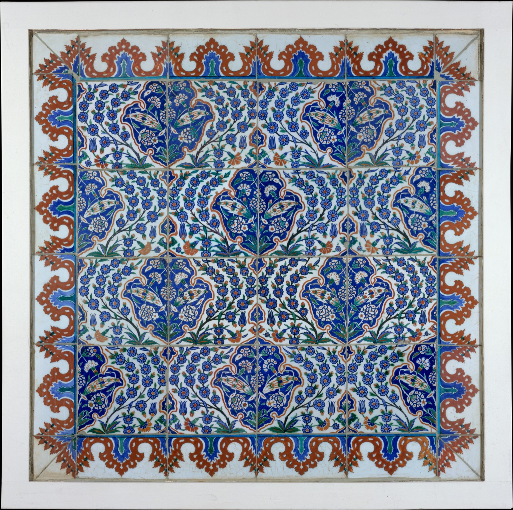
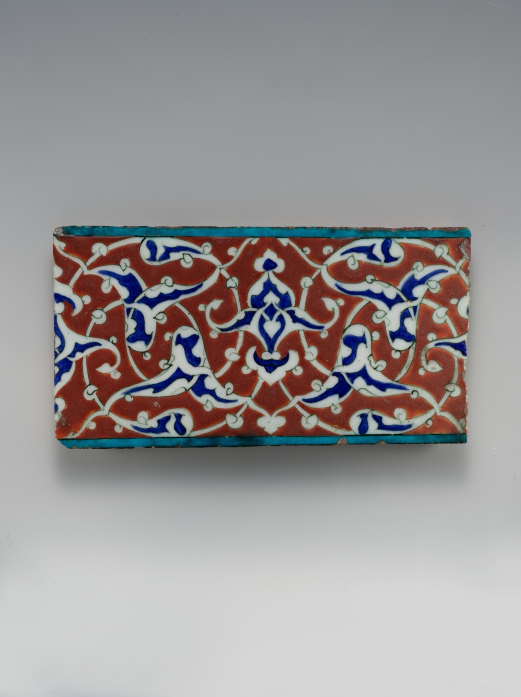
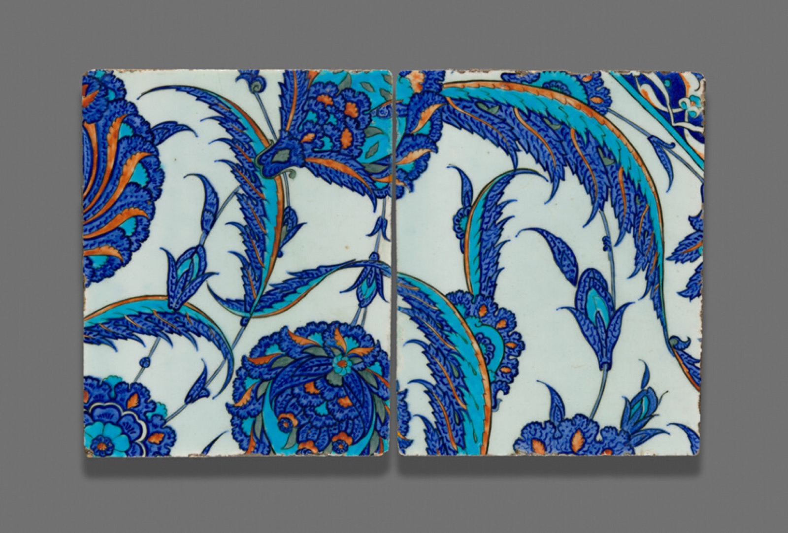
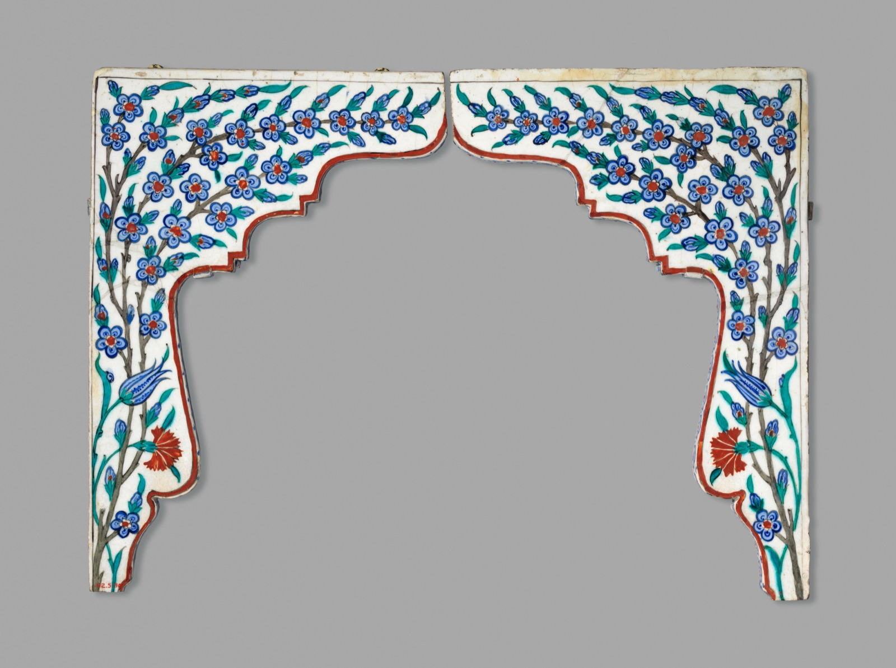

Tahrire giriş
2.400 ₺
- Cumartesi, 10.00–16.00
- En fazla altı kişi
- 7 ve 21 Kasım
İznik'te sipariş üzerine elde çizilip boyanan çini karo ve panolar. Deseni, rengi ve ölçüyü atölyede, numunelere bakarak birlikte seçiyoruz.
Çarşı Sokak No 14, İznik
Salıdan pazara, 10.00–18.00
Deseniniz ölçünüze çizilir, kobalt, firuze ve mercanla boyanır, üç haftada fırından çıkar.

Raftan satış yok. Her karo sipariş üzerine, atölyede yapılır.
Bu karolar 16. yüzyılda İznik'te yapıldı, bugün New York ve Chicago müzelerinde duruyor. Atölyedeki desenler onlardan çalışılır. Kodu not edin, numune duvarında gösterelim.

KC-01İznik1560–75sır altı
Metropolitan MüzesiNew York
Saz yaprağı, lale ve sümbül

KC-02İznik1545–55sır altı
Metropolitan MüzesiNew York
Saz yaprağı

KC-04İznik1578sır altı
Metropolitan MüzesiNew York
Bulut kuşağı ve çiçek

KC-12İznik1560–70sır altı
Metropolitan MüzesiNew York
Çintemani

KC-07İznik1550–1600pano
Metropolitan MüzesiNew York
Madalyonlu pano

KC-09İznik1578bordür
Metropolitan MüzesiNew York
Rumi bordür, mercan zemin

KC-05İznik16. yyçift karo
Art InstituteChicago
Hatayi ve saz, iki karo

KC-15İznik17. yykemer
Metropolitan MüzesiNew York
Kemer köşeliği
Yüzyıllardır aynı sırayla çalışılır, biz de değiştirmiyoruz. Her aşamayı açın, karonun o gün nasıl göründüğünü görün. Atölyeye geldiğinizde hepsi masada, yarım hâlleriyle durur.
Kuvars, cam ve biraz kilden hamur yoğrulur, kalıba basılıp kurutulur. Üstüne beyaz astar sürülür; renkler bu beyazın üstünde parlar.
Desen, delikli silkme kâğıdından kömür tozuyla karoya geçer. Konturlar ince fırçayla, koyu boyayla çekilir. Buna tahrir denir.
Önce kobalt, sonra firuze ve yeşil, en son mercan kırmızısı. Mercan kalın sürülür, fırından kabarık çıkar; elinizi sürünce hissedersiniz.
Boyalı karo şeffaf sıra daldırılır. Sır pişene kadar süt beyazıdır, renkler altında soluk görünür. Bu aşamada karo en çirkin hâlindedir.
Karolar 900 derece civarında pişer. Fırın kendi kendine soğuyana kadar açılmaz; açıldığında sır camlaşmış, renkler yerine oturmuştur.
Bursa'dan geliyorsanız araçla 80 km, yaklaşık 1 sa 15 dk. Süreler feribot saatine ve trafiğe göre değişir. Haritada aç
2.400 ₺
2.900 ₺
18.000 ₺
Ücretler ve tarihler örnektir; yer ayırtmak için yazın ya da arayın.
Ziyaret bir saat kadar sürer. Numunelere gün ışığında bakarız, duvarın ölçüsünü konuşuruz; ölçü yoksa fotoğraf da yeter. Hangi gün geleceğinizi yazın, ayıralım.